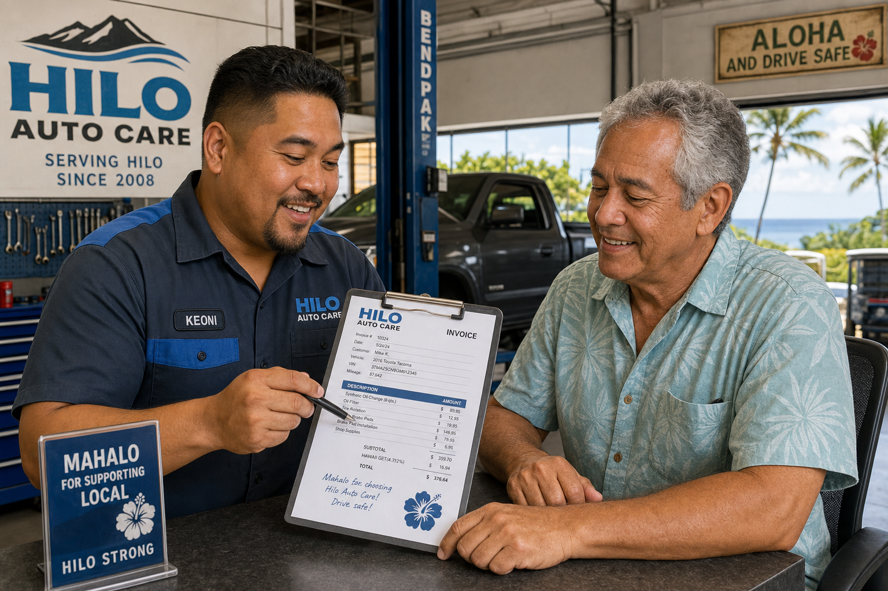

Finding a trustworthy mechanic is stressful anywhere, but in a smaller community like Hilo, it matters even more — both because your options are more limited and because you'll likely be seeing these people regularly for years. After 14 years in business, we've heard countless stories from customers who had bad experiences elsewhere before finding us. Here's what we tell people to look for when choosing an auto shop.
ASE Certification Matters
ASE (Automotive Service Excellence) certification means a technician has passed rigorous nationally standardized tests in specific automotive systems. It's not a guarantee of quality, but it is a meaningful baseline. Any reputable shop should prominently display their technicians' ASE certifications. Don't hesitate to ask to see them.
Written Estimates Before Work Begins
Any honest shop will provide a written estimate before beginning repairs and call you for approval if the actual cost will exceed the estimate. If a shop gives you verbal quotes and doesn't put them in writing, or if you pick up your car and the bill is significantly higher than what you were told, those are serious red flags. Hawaii law requires written estimates for repairs over $100 — insist on them.
Transparency About What Was Found
Modern diagnostic tools allow shops to photograph the problem and show you what they found. A good mechanic should be able to explain what's wrong, show you the evidence, and explain why the repair is necessary. Be cautious of shops that are vague about what they found or pressure you into repairs without a clear explanation.
Google Reviews and Community Reputation
In Hilo's relatively small community, a shop's reputation matters and is relatively easy to assess. Read Google Reviews carefully, paying attention to how the shop responds to negative reviews. Ask neighbors, coworkers, and friends who they use. Word of mouth is still one of the most reliable guides to quality in a small community.
At Mana Auto Works, we stake our reputation on transparency and quality. We invite you to come in, ask questions, and judge us by our work.